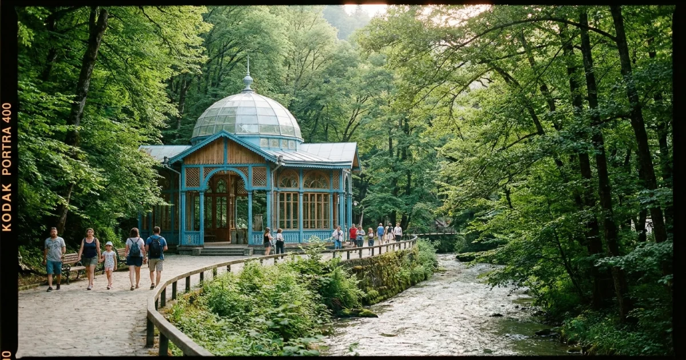

Казбеги

Кахетия

Боржоми

Ужин-тур
Индустриальный стандарт. scrub: true привязывает анимацию к скроллу 1:1. Поддерживает: fade, scale, clip-path, parallax, pin.

~30 KB, все браузеры, scrub = плавность